<title>v0.20 Onslaught Assets</title>
<meta name="claude:viewport-fit-sides" content="cover">
<link rel="preconnect" href="https://fonts.googleapis.com">
<link rel="stylesheet" href="https://fonts.googleapis.com/css2?family=Jersey+10&family=IBM+Plex+Sans:wght@400;600&family=IBM+Plex+Mono:wght@400&display=swap">
<style>
/* Layout: one reading column of numbered review batches on the game's charcoal floor; wide sheets scroll inside their own frame. One dark look on purpose: the art is judged against the in-game floor, as on the v0.12 and v0.13 pages. */
:root {
  --bg: #15191e;
  --panel: #20262d;
  --edge: #323b45;
  --text: #e8edf2;
  --muted: #aab6c2;
  --gold: #f2c14e;
  --accent: #3fd0ff;
  --warn: #ff9a3d;
  --ok: #8fd18f;
  --display: "Jersey 10", "Courier New", monospace;
  --body: "IBM Plex Sans", system-ui, sans-serif;
  --mono: "IBM Plex Mono", ui-monospace, monospace;
  --z: 2;
  color-scheme: dark;
}
body { background: var(--bg); color: var(--text); font: 15px/1.55 var(--body); }
main { max-width: 1180px; margin: 0 auto; padding-block: 28px 72px; padding-left: max(16px, env(safe-area-inset-left, 0px)); padding-right: max(16px, env(safe-area-inset-right, 0px)); display: grid; gap: 22px; }
h1, h2, h3 { font-family: var(--display); font-weight: 400; letter-spacing: 0.02em; text-wrap: balance; margin: 0; }
h1 { font-size: 46px; line-height: 1; }
h2 { font-size: 30px; line-height: 1.1; }
h3 { font-size: 22px; line-height: 1.1; color: var(--gold); }
p { margin: 0; max-width: 72ch; color: var(--muted); }
p strong, li strong { color: var(--text); font-weight: 600; }
code { font: 13px var(--mono); color: var(--text); }
a { color: var(--accent); }
a:focus-visible, button:focus-visible { outline: 2px solid var(--accent); outline-offset: 2px; }
.lede { display: grid; gap: 10px; }
.batch { display: grid; gap: 14px; }
.batch > header { display: grid; gap: 6px; border-bottom: 1px solid var(--edge); padding-bottom: 10px; }
.tag { font: 12px var(--mono); letter-spacing: 0.08em; text-transform: uppercase; color: var(--gold); }
section.item { background: var(--panel); border: 1px solid var(--edge); padding: 16px; display: grid; gap: 10px; min-width: 0; }
.row { display: flex; flex-wrap: wrap; gap: 10px 16px; align-items: baseline; justify-content: space-between; }
.state { font: 12px var(--mono); color: var(--warn); border: 1px solid var(--warn); padding: 1px 6px; white-space: nowrap; }
.state.ok { color: var(--ok); border-color: var(--ok); }
td.ok { color: var(--ok) !important; }
.sheet { overflow-x: auto; border: 1px solid var(--edge); background: var(--bg); }
.sheet img { display: block; max-width: none; image-rendering: pixelated; }
.sheet img.z { width: calc(var(--w) * var(--z) * 1px); height: auto; }
.sheet img.fit { max-width: 100%; height: auto; }
.zoom { position: sticky; top: env(safe-area-inset-top, 0px); z-index: 5; background: var(--bg); padding-block: 8px; display: flex; gap: 8px; align-items: center; border-bottom: 1px solid var(--edge); }
body::before { content: ""; position: fixed; inset: 0 0 auto; height: env(safe-area-inset-top, 0px); z-index: 10; background: var(--bg); }
.zoom span { font: 13px var(--mono); color: var(--muted); }
button { font: 14px var(--mono); color: var(--text); background: var(--panel); border: 1px solid var(--edge); padding: 4px 12px; cursor: pointer; }
button[aria-pressed="true"] { background: var(--accent); color: #062633; border-color: var(--accent); }
.clip { display: grid; gap: 8px; }
.clip canvas { display: block; image-rendering: pixelated; max-width: 100%; height: auto; border: 1px solid var(--edge); background: var(--bg); }
.controls { display: flex; flex-wrap: wrap; gap: 8px; align-items: center; }
.controls output { font: 12px var(--mono); color: var(--muted); }
.strips { display: grid; gap: 12px; }
.strip { display: grid; gap: 4px; min-width: 0; }
.strip > span { font: 13px var(--mono); color: var(--text); }
.strip > span em { font-style: normal; color: var(--muted); }
.sounds { display: grid; grid-template-columns: repeat(auto-fill, minmax(260px, 1fr)); gap: 10px; }
.sounds figure { margin: 0; padding: 10px; border: 1px solid var(--edge); background: var(--bg); display: grid; gap: 6px; min-width: 0; }
.sounds figcaption { font: 13px var(--mono); color: var(--text); }
.sounds figcaption span { display: block; font: 13px var(--body); color: var(--muted); }
.sounds audio { width: 100%; }
.sounds figure.old { border-style: dashed; }
ul { margin: 0; padding-left: 20px; display: grid; gap: 6px; max-width: 76ch; color: var(--muted); }
.table { overflow-x: auto; }
table { border-collapse: collapse; width: 100%; font-size: 14px; }
th, td { text-align: left; padding: 6px 10px; border-bottom: 1px solid var(--edge); vertical-align: top; }
th { font: 12px var(--mono); color: var(--muted); text-transform: uppercase; letter-spacing: 0.06em; }
td:last-child { white-space: nowrap; color: var(--warn); font: 12px var(--mono); }
@media (prefers-reduced-motion: reduce) { .clip canvas { animation: none; } }
</style>
<main>
  <div class="lede">
    <span class="tag">WAR-2D · v0.20 Onslaught · asset review, 2026-11-06</span>
    <h1>Onslaught assets for approval</h1>
    <p>Every new sprite, effect and sound in v0.20, drawn by the generators (<code>RenderGen.Onslaught</code>, <code>EffectGen.Onslaught</code>, the sound sets in <code>docs/art/v0.20/sfx-src/</code>) in the game's pixel finish at 64 px per tile. <strong>Nothing here is in the game yet.</strong> Approve or ask for changes per row, here in comments or in conversation; decisions go into <code>docs/art/v0.20-asset-review.md</code>. Blue and red are player colours 1 and 2.</p>
    <p>The <strong>clips are staged</strong> from the generators on a bare floor, because the rules they show aren't built yet. Once they are, clips from a real match replace them before the rows close. The HUD and the Field manual are in Figma: <a href="https://www.figma.com/design/JrMColnJiQbFfODqyPjBYf?node-id=229-2413" target="_blank" rel="noopener">page v0.20 Onslaught</a> (B1 status markers, B2 hover cards and command card, B3 manual pages).</p>
  </div>

  <div class="zoom" role="group" aria-label="Sprite zoom">
    <span>Sprite zoom</span>
    <button type="button" data-z="1" aria-pressed="false">1×</button>
    <button type="button" data-z="2" aria-pressed="true">2×</button>
    <button type="button" data-z="4" aria-pressed="false">4×</button>
    <span>1× is closest zoom in game (64 px a tile)</span>
  </div>

  <div class="batch" id="units">
    <header><span class="tag">Batch 1</span><h2>Units and buildings</h2><p>Needed first: the Sniper's and the Gun turret's heads are what the aim and turret work is checked against.</p></header>

    <section class="item">
      <div class="row"><h3>Sniper, 2×2, with a turning head</h3><span class="state ok">approved 2026-11-06</span></div>
      <p>A long, low eight-wheeled tank destroyer with folded stabiliser legs and a rear engine deck; a low wedge head with a big scope and a very long barrel (the laser and the shot leave from its tip). Left to right: 8 facings, both shot frames, the head turned 45° and 90° off the hull, red, then the old 1×1 Sniper, a Heavy and a Tank for scale.</p>
      <div class="sheet">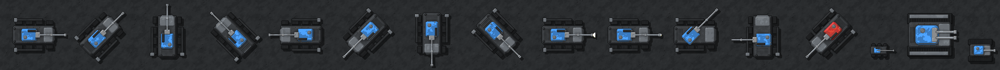</div>
      <p>The two layers the game draws: the hull in 4 facings, then the head alone (it turns about the canvas centre).</p>
      <div class="sheet">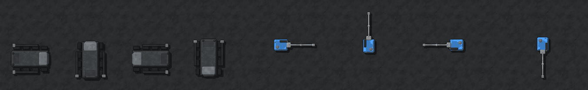</div>
      <div class="sheet">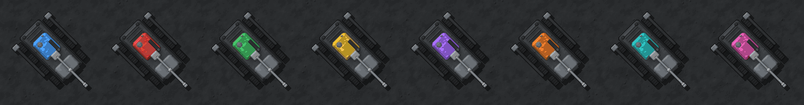</div>
    </section>

    <section class="item">
      <div class="row"><h3>Gun turret, 2×2, with a twin-barrelled head</h3><span class="state ok">approved 2026-11-06</span></div>
      <p><strong>Changed 2026-11-06: the concrete pad is gone</strong>, and then the ammunition boxes, so the octagonal plinth stands straight on the ground with nothing round it. It keeps a team ring and a status lamp. The head has a wide team shield, ammunition drums each side and twin jacketed barrels; the game alternates them. Left to right: the head in 8 facings, the left and the right barrel firing, damaged, the base alone (whole, damaged), red, then the old 1×1 turret and a Tank for scale.</p>
      <div class="sheet">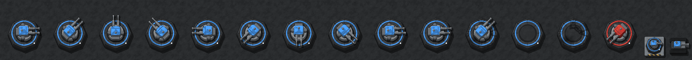</div>
      <div class="sheet">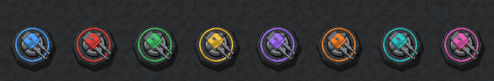</div>
    </section>

    <section class="item">
      <div class="row"><h3>Bomber and Mine (renamed, same art)</h3><span class="state ok">approved 2026-11-06</span></div>
      <p>The Suicide bomber and the Bomb under their new names with their art unchanged, as the spec proposes. Say if either should get a new look. Bomber: 8 facings, the move frame, both armed frames, red. Mine: both frames, blue and red.</p>
      <div class="sheet">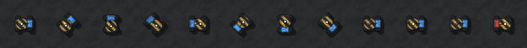</div>
      <div class="sheet">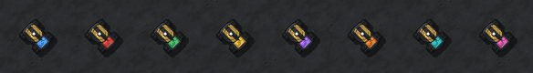</div>
      <div class="sheet">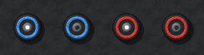</div>
      <div class="sheet">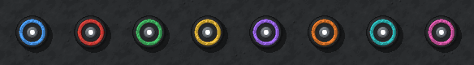</div>
    </section>

    <section class="item">
      <div class="row"><h3>Wrecks and a thrown head</h3><span class="state ok">approved 2026-11-06</span></div>
      <p>The 2×2 Sniper's charred hull on a large scorch with its head thrown a tile off (a shot death); the 2×2 turret's rubble with its head thrown off; the old 1×1 Sniper's wreck for comparison.</p>
      <div class="sheet">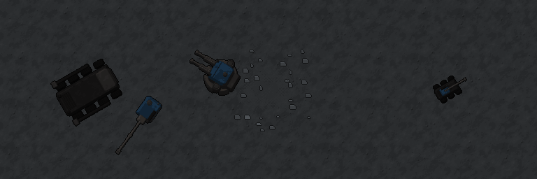</div>
    </section>

    <section class="item">
      <div class="row"><h3>In game, 1:1</h3></div>
      <p>Two 2×2 Gun turrets in front of an HQ (the lower one firing), a gun line of 2×2 Snipers behind Heavies and Tanks with a Scout forward, against a red army with Bombers in front.</p>
      <div class="sheet">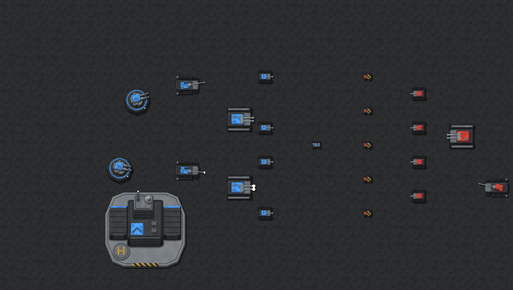</div>
    </section>
  </div>

  <div class="batch" id="effects">
    <header><span class="tag">Batch 2</span><h2>Attack effects</h2><p>Each clip plays at 10 frames a second; pause it to step through. Frame strips of every effect are under the clips.</p></header>
    <section class="item"><div class="row"><h3>Bomber leap and landing</h3><span class="state ok">approved 2026-11-06</span></div><p>Runs in, crouches, rises on an arc over the front Tank with its shadow on the ground and a spark trail, then lands in the middle of the group: a bigger blast with a shockwave ring sized to its 2-tile radius.</p><div class="clip" data-clip="leap"></div></section>
    <section class="item"><div class="row"><h3>Flame stream, the 2.5-tile spread, burning and scorch</h3><span class="state ok">approved 2026-11-06</span></div><p>A Flamethrower at 5.5 tiles: the stream, fire over the whole splash circle, a scorch left along the stream, and every Tank it touched burning (flames on the sprite, embers, thin smoke) after the stream stops.</p><div class="clip" data-clip="flame"></div></section>
    <section class="item"><div class="row"><h3>A burning building</h3><span class="state ok">approved 2026-11-06</span></div><p>Flames across the footprint, embers and a smoke column. Walls never burn.</p><div class="clip" data-clip="burn-building"></div></section>
    <section class="item"><div class="row"><h3>Sniper aim, glint, shot and hit</h3><span class="state ok">approved 2026-11-06</span></div><p>Two seconds of aim: the laser brightens and gains a hot core, a glint flares at the muzzle, then a hard white shot line lingers 0.3 s and a big hit spark lands on the Heavy.</p><div class="clip" data-clip="sniper"></div></section>
    <section class="item"><div class="row"><h3>Armour spark ring</h3><span class="state ok">approved 2026-11-06</span></div><p>A Scout's shots cut to 1 by a Heavy's armour: a steel arc on the side facing the shot and sparks glancing off, so small arms read as bouncing.</p><div class="clip" data-clip="armour"></div></section>
    <section class="item"><div class="row"><h3>Artillery launch, larger shell, blast and crater</h3><span class="state ok">approved 2026-11-06</span></div><p>Launch smoke ring at the raised barrel, the bigger shell (fuze, two driving bands, four fins) on its arc with its ground shadow and trail, then the 3.5-tile blast with shockwave and a dust ring, and the larger crater. The range is shortened to fit the clip.</p><div class="clip" data-clip="artillery"></div></section>
    <section class="item"><div class="row"><h3>Incoming shell, for a player who doesn't see the gun</h3><span class="state ok">approved 2026-11-06</span></div><p>Only the last 0.6 s: the shell drops nose-down with speed streaks and a shrinking shadow, so its direction isn't given away; then the same blast.</p><div class="clip" data-clip="incoming"></div></section>
    <section class="item"><div class="row"><h3>Gun turret twin flash and tracer stream</h3><span class="state ok">approved 2026-11-06</span></div><p><strong>Changed 2026-11-06: bullets now come out of both barrels.</strong> Ten shots a second: both muzzles flash (the one recoiling larger) and each barrel sends its own stream of tracer, half a beat apart, moving out to the target. The stream is cut to the distance, never stretched, so the dashes keep their size and pace as the target closes, instead of a tracer a shot, here cutting down a Bomber before it can leap.</p><div class="clip" data-clip="turret"></div></section>
  </div>

  <div class="batch" id="deaths">
    <header><span class="tag">Batch 3</span><h2>Deaths</h2></header>
    <section class="item"><div class="row"><h3>Deaths by cause and size</h3><span class="state ok">approved 2026-11-06</span></div><p>Left to right: a Tank <strong>shot</strong> (a pop with a shock ring, its turret thrown off on an arc beside the wreck); a Heavy, a <strong>large</strong> unit (a blast, then a second one a beat later, a larger scorch); a Tank caught in a <strong>blast</strong> (the wreck flung a tile and turned, debris flying); a Tank <strong>burned</strong> (flames, darkening, then a black wreck that smoulders).</p><div class="clip" data-clip="deaths"></div></section>
    <section class="item"><div class="row"><h3>Building collapse</h3><span class="state ok">approved 2026-11-06</span></div><p>About 1.5 s: small blasts across the footprint, the sprite darkening and sinking, a dust cloud rolling out, then the rubble. The HQ ends with the larger finale in the strips below.</p><div class="clip" data-clip="collapse"></div></section>
  </div>

  <section class="item" id="strips">
    <h2>Every effect, frame by frame</h2>
    <p>At the zoom chosen above. Strips run left to right in time order on the floor.</p>
    <div class="strips" id="strip-list"></div>
  </section>

  <div class="batch" id="sounds">
    <header><span class="tag">Batch 4</span><h2>Sounds</h2><p>Generated with the game's synth from the parameter sets in <code>docs/art/v0.20/sfx-src/</code>. Dashed cards are today's sounds, for comparison. Each plays after you press it.</p></header>
    <div class="sounds" id="sound-list"></div>
  </div>

  <section class="item" id="notes">
    <h2>Notes before you approve</h2>
    <ul>
      <li><strong>Off-palette pixels:</strong> the larger shell's soft edges (HeavyShell, IncomingShell) and one shade in the armour sparks fall outside the effect palette. They look as they will, but must be snapped to the palette before the atlas test passes; that happens when they go in, without changing the look.</li>
      <li><strong>Turret fire loop:</strong> a new <code>repeat</code> option in the synth lays one shot down ten times a second as a single clip, so the turret plays one loop instead of ten sounds a second.</li>
      <li><strong>Figma stand-ins:</strong> B1 still draws the old 1×1 Sniper sprite and uses the Bomber's icon for the airborne Bomber; the frames are about the bars and markers, and the real sprites are the ones on this page.</li>
      <li><strong>Burning</strong> shows both flames on the unit or building and the flame marker at its health bar (owner, 2026-11-06).</li>
    </ul>
  </section>

  <section class="item" id="checklist">
    <h2>Checklist</h2>
    <p>Every row of <code>docs/art/v0.20-asset-review.md</code>. v0.20 doesn't merge while any row isn't approved. Owner, 2026-11-06: everything approved, the Gun turret after its changes (no pad or boxes, bullets from both barrels moving to the target).</p>
    <div class="table"><table>
      <thead><tr><th>Asset</th><th>Batch</th><th>State</th></tr></thead>
      <tbody id="rows"></tbody>
    </table></div>
  </section>
</main>
<script>
(() => {
  const root = document.documentElement;
  const zoomButtons = document.querySelectorAll('.zoom button');
  const setZoom = (z) => {
    root.style.setProperty('--z', z);
    zoomButtons.forEach((b) => b.setAttribute('aria-pressed', String(b.dataset.z === String(z))));
    document.querySelectorAll('.clip canvas').forEach((c) => { c.style.width = Math.min(c.width * (z >= 2 ? 1 : 0.5), c.parentElement.clientWidth) + 'px'; });
    try { localStorage.setItem('v020-zoom', z); } catch (e) {}
  };
  zoomButtons.forEach((b) => b.addEventListener('click', () => setZoom(b.dataset.z)));

  const clips = {
    leap: { w: 640, h: 256, frames: 22, cols: 8 }, flame: { w: 768, h: 384, frames: 24, cols: 8 }, 'burn-building': { w: 256, h: 320, frames: 12, cols: 8 },
    sniper: { w: 704, h: 192, frames: 30, cols: 8 }, armour: { w: 448, h: 128, frames: 12, cols: 8 }, artillery: { w: 896, h: 384, frames: 40, cols: 8 },
    incoming: { w: 512, h: 448, frames: 20, cols: 8 }, turret: { w: 576, h: 192, frames: 12, cols: 8 }, deaths: { w: 1024, h: 256, frames: 24, cols: 8 },
    collapse: { w: 320, h: 320, frames: 22, cols: 8 },
  };
  const still = window.matchMedia('(prefers-reduced-motion: reduce)').matches;
  document.querySelectorAll('.clip').forEach((box) => {
    const name = box.dataset.clip, c = clips[name];
    const canvas = document.createElement('canvas'); canvas.width = c.w; canvas.height = c.h;
    canvas.setAttribute('role', 'img'); canvas.setAttribute('aria-label', name + ' clip');
    const ctx = canvas.getContext('2d'); ctx.imageSmoothingEnabled = false;
    const controls = document.createElement('div'); controls.className = 'controls';
    const play = document.createElement('button'); play.type = 'button';
    const back = document.createElement('button'); back.type = 'button'; back.textContent = '◀ Frame';
    const next = document.createElement('button'); next.type = 'button'; next.textContent = 'Frame ▶';
    const out = document.createElement('output');
    controls.append(play, back, next, out); box.append(canvas, controls);
    const img = new Image(); img.src = 'clip-' + name + '.png';
    let frame = 0, playing = !still, last = 0;
    const draw = () => {
      const col = frame % c.cols, row = Math.floor(frame / c.cols);
      ctx.drawImage(img, col * c.w, row * c.h, c.w, c.h, 0, 0, c.w, c.h);
      out.textContent = `frame ${frame + 1} of ${c.frames} · ${(frame / 10).toFixed(1)} s`;
      play.textContent = playing ? 'Pause' : 'Play';
    };
    play.addEventListener('click', () => { playing = !playing; draw(); });
    back.addEventListener('click', () => { playing = false; frame = (frame + c.frames - 1) % c.frames; draw(); });
    next.addEventListener('click', () => { playing = false; frame = (frame + 1) % c.frames; draw(); });
    const tick = (t) => { if (playing && t - last > 100) { last = t; frame = (frame + 1) % c.frames; draw(); } requestAnimationFrame(tick); };
    img.addEventListener('load', () => { draw(); requestAnimationFrame(tick); });
  });

  const strips = [
    ['LeapSparks', 'Bomber leap: spark trail, cooling', 368], ['LeapShadow', 'Bomber leap: ground shadow, low to high', 296], ['BomberLanding', 'Bomber landing blast, shockwave to 2 tiles', 2632],
    ['FlameSplashWide', 'Flame fire over the 2.5-tile spread (two flicker frames)', 792], ['FlameScorch', 'Scorch along a flame stream, fading', 808],
    ['BurnFlames1', 'Flames on a burning 1×1 unit', 296], ['BurnFlames2', 'Flames on a burning 2×2 unit or building', 552], ['BurnFlames3', 'Flames on a burning 3×3 building', 808], ['SootSmoke', 'Smoke over a fire, and a wreck’s smoulder', 368],
    ['AimLaser', 'Sniper aim laser, from start (top) to firing (bottom)', 272], ['MuzzleGlint', 'Sniper muzzle glint', 128], ['SniperTrail', 'Sniper shot line, lingering 0.3 s', 1064], ['SniperHit', 'Sniper hit spark', 296], ['ArmourSparks', 'Armour spark ring', 296],
    ['HeavyShell', 'Larger Artillery shell, 8 headings', 584], ['IncomingShell', 'Incoming shell drop', 152], ['LaunchPuff', 'Artillery launch smoke', 824], ['ArtilleryBlast', 'Artillery blast: shockwave to 3.5 tiles, dust ring', 4168], ['CraterLarge', 'Larger crater, 3 variants', 608],
    ['TwinMuzzle', 'Gun turret twin flash, left then right', 152], ['TracerStream', 'Gun turret tracer streams, one per barrel, 3 crawl frames', 416],
    ['DeathSmall', 'Small unit death', 960], ['DeathLarge', 'Large unit death, second blast', 2120], ['Debris', 'Blast-death debris', 1208], ['DustCloud', 'Building collapse dust', 1208], ['HqFinale', 'HQ collapse finale', 4168],
  ];
  const list = document.getElementById('strip-list');
  for (const [id, label, w] of strips) {
    const d = document.createElement('div'); d.className = 'strip';
    d.innerHTML = `<span>${label} <em>EffectGen.${id === 'ArtilleryBlast' || id === 'BomberLanding' || id === 'HqFinale' ? 'ShockBlast' : id === 'FlameSplashWide' ? 'FlameSplashSized' : id}</em></span><div class="sheet"></div>`;
    list.append(d);
  }

  const sounds = [
    ['bomber_leap', 'Bomber leaving the ground: a rising swoop'], ['bomber_blast', 'Bigger Bomber blast (replaces today’s)'], ['flame_ignite', 'A target catching fire'], ['burn_loop', 'Burning, positional, a few voices at most'], ['burn_death', 'A unit burning down'],
    ['sniper_aim', 'Rising tone while the laser is up (2 s)'], ['sniper_shot', 'The sharp crack of the shot'], ['artillery_launch', 'Artillery firing'], ['shell_incoming', 'Shell whistle on the way down'], ['shell_impact_large', 'The 3.5-tile shell landing'],
    ['armour_ping', 'A shot bouncing off armour'], ['turret_fire_loop', 'Gun turret firing, ten shots a second as one loop'], ['death_small', 'Small unit death'], ['death_large', 'Large unit death with its second blast'], ['building_collapse', 'A building coming down'],
    ['mine_blast', 'Mine blast (renamed bomb_blast, unchanged)'], ['alert_mine', 'Mine-triggered alert (renamed alert_bomb, unchanged)'],
    ['old_bomber_blast', 'Today: bomber_blast'], ['old_shot_sniper', 'Today: shot_sniper'], ['old_shot_artillery', 'Today: shot_artillery'], ['old_shell_impact', 'Today: shell_impact'], ['old_shot_turret', 'Today: shot_turret (one shot)'], ['old_shot_flamethrower', 'Today: shot_flamethrower'], ['old_explosion_small', 'Today: explosion_small'], ['old_explosion_large', 'Today: explosion_large'], ['old_building_destroyed', 'Today: building_destroyed'],
  ];
  const sl = document.getElementById('sound-list');
  for (const [id, label] of sounds) {
    const f = document.createElement('figure'); if (id.startsWith('old_')) f.className = 'old';
    f.innerHTML = `<figcaption>${id}<span>${label}</span></figcaption><audio controls preload="none" src="sfx/${id}.wav"></audio>`;
    sl.append(f);
  }

  const rows = [
    ['Sniper, 2×2 hull and turning head', '1'], ['Gun turret, 2×2 base and twin-barrelled head', '1'], ['Bomber (renamed, same art)', '1'], ['Mine (renamed, same art)', '1'], ['Wrecks of the new Sniper and Gun turret, thrown head', '1'],
    ['Bomber crouch, leap arc, shadow, spark trail', '2'], ['Bomber landing blast with shockwave ring', '2'], ['Wider flame stream and fire over the 2.5-tile spread', '2'], ['Flames on burning units and buildings, embers, smoke', '2'], ['Ground scorch along a flame stream', '2'],
    ['Sniper aim laser and muzzle glint', '2'], ['Sniper shot trail and hit spark', '2'], ['Armour spark ring', '2'], ['Artillery launch puff and larger shell', '2'], ['Incoming shell drop', '2'], ['Artillery blast with shockwave and dust, larger crater', '2'], ['Gun turret twin muzzle flash and tracer stream', '2'],
    ['Small death with the head thrown off', '3'], ['Large death with a second blast and larger scorch', '3'], ['Blast death: wreck flung and turned, debris', '3'], ['Fire death: burning down, black wreck, smoulder', '3'], ['Building collapse and the HQ finale', '3'],
    ['17 sounds (leap, blasts, fire, aim, shells, armour, turret loop, deaths, collapse, Mine renames)', '4'],
    ['B1 · burning marker and flames, reload and aim bars', 'Figma'], ['B2 · hover-card lines, Bomber and Mine icons, the 2×2 Gun turret', 'Figma'], ['B3 · Field manual: Bomber, Sniper, Rules › Combat', 'Figma'], ['The manual’s words (draft JSON)', 'Draft'],
  ];
  const tb = document.getElementById('rows');
  const changed = new Set();
  for (const [a, b] of rows) { const tr = document.createElement('tr'); const c = changed.has(a); tr.innerHTML = `<td>${a}</td><td>${b}</td><td${c ? '' : ' class="ok"'}>${c ? 'changed, awaiting approval' : 'approved 2026-11-06'}</td>`; tb.append(tr); }

  let z = 2; try { z = Number(localStorage.getItem('v020-zoom')) || 2; } catch (e) {}
  setZoom(z);
})();
</script>
